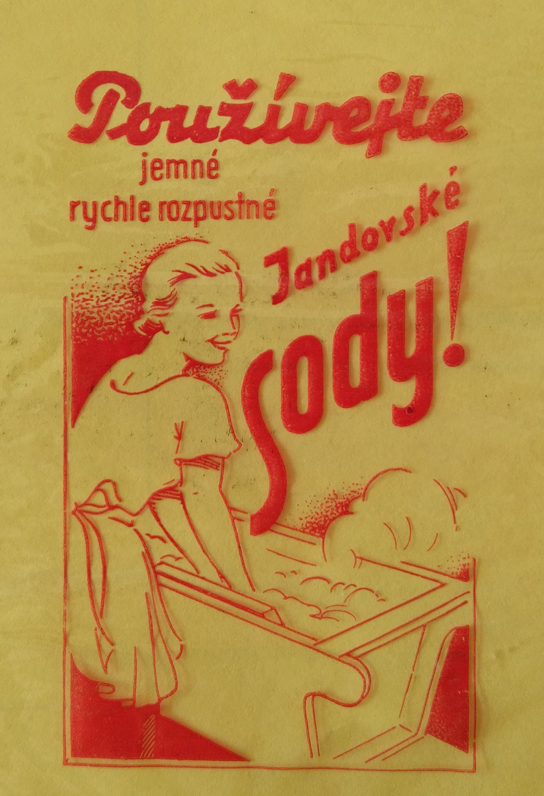
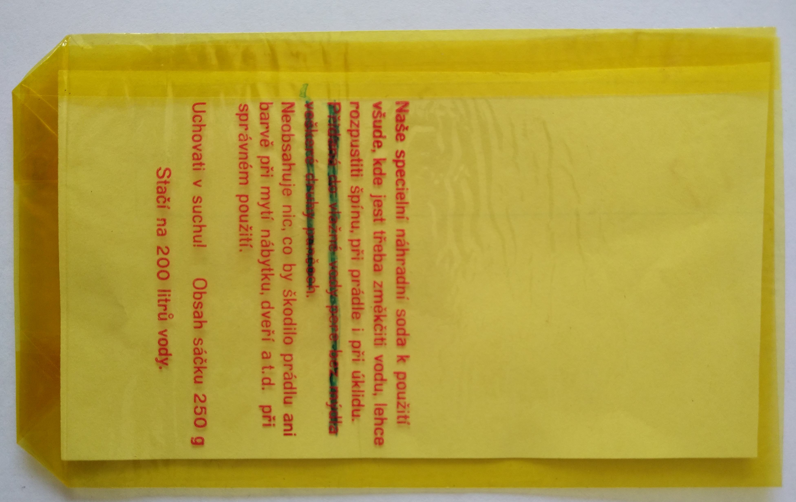
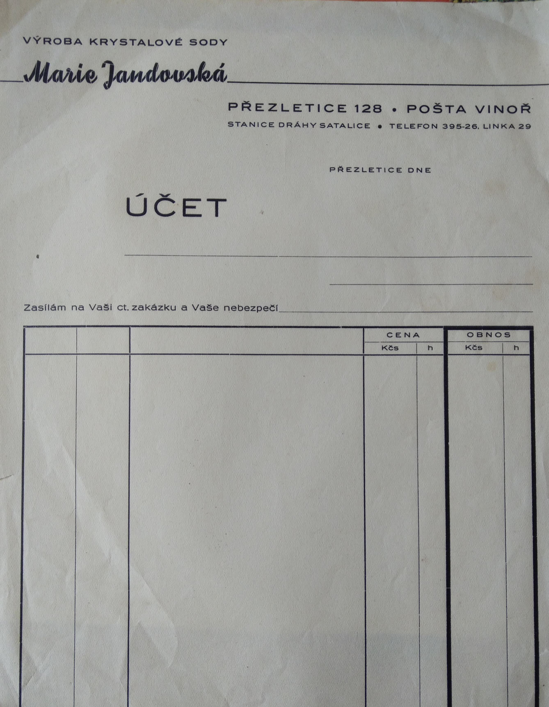
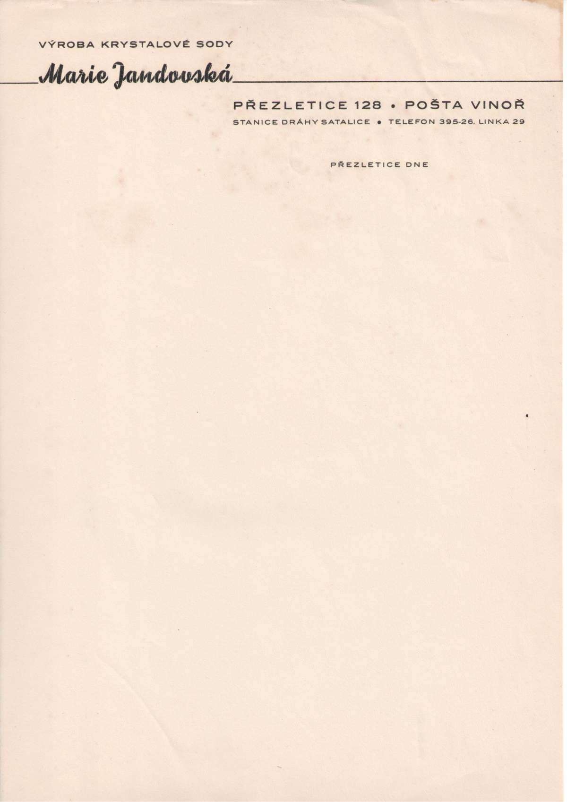
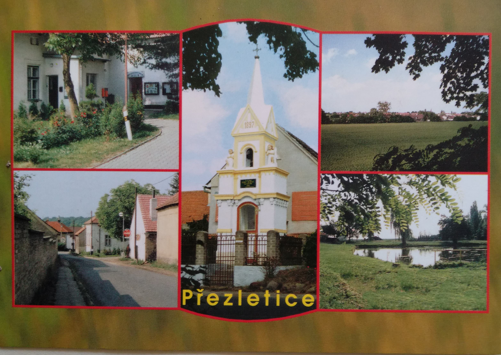
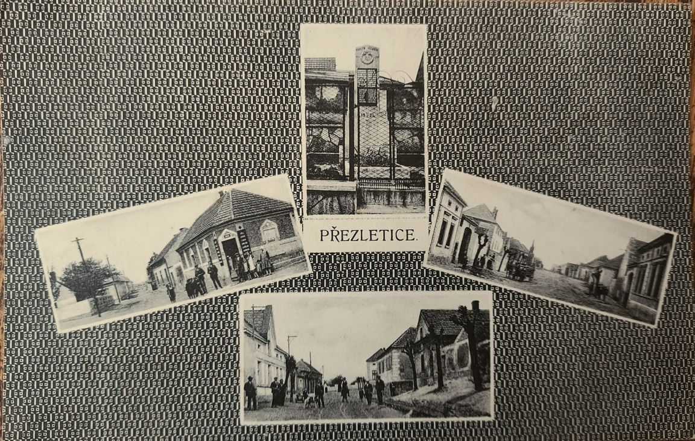

Reklamní pytlík z obchodu Františka Horáka |
 Reklamní pytlík z Jandovské sodárny, která byla poblíž autobusové zastávka 302 - Pod Zahrady |
 Zadní strana pytlíku z Jandovské sodárny, která byla poblíž autobusové zastávka 302 - Pod Zahrady |
 Hlavičkový papír - Jandovské sodárny |
 Hlavičkový papír - Jandovské sodárny |
 Pohled Přezletice |
 Pohled Přezletice |
 Jízdenka ČSAD do Přezletic z roku 1971 |